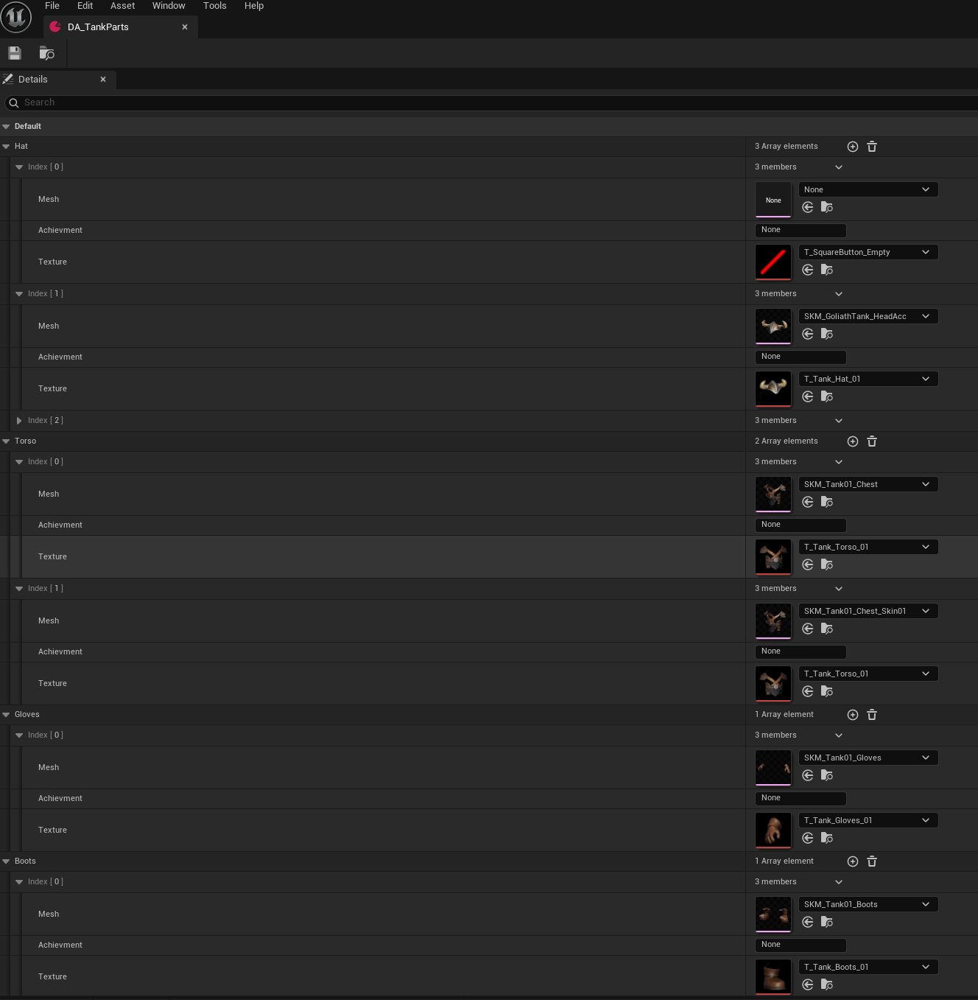

Sistema de Customização de Personagens Data-Driven & UI Dinâmica Data-Driven Character Customization & Dynamic UI System
Sistema modular de personalização para gerenciamento de variações anatômicas, troca de partes do corpo e alterações de cores via Custom Primitive Data, com UI instanciada dinamicamente a partir de DataAssets. Modular character customization system managing anatomical variations, body part swaps, and color parameters via Custom Primitive Data, featuring DataAsset-driven dynamic UI.
Como Funciona & Lógica da Arquitetura How It Works & System Architecture
1. Centralização Estruturada em DataAsset 1. DataAsset Centralization
Todas as variações visuais — incluindo as malhas de cada parte do corpo (cabeça, tronco, membros, acessórios) separadas por biotipo — são parametrizadas dentro de um DataAsset. Ele atua como a "fonte única da verdade" (single source of truth) para os dados estéticos dos personagens. All visual variations—including body parts (head, torso, limbs, accessories) categorized by body types—are defined inside a DataAsset acting as a single source of truth.
2. Geração Automática de UI (Dynamic Widget Spawning) 2. Dynamic UI Generation (Widget Spawning)
A interface do usuário (UMG) se adapta dinamicamente aos dados. O sistema lê cada array de itens e categorias presente no DataAsset e instancia automaticamente os botões correspondentes na tela. Adicionar ou remover uma opção de customização no DataAsset atualiza a UI instantaneamente sem necessidade de criar botões manualmente no UMG. The UI (UMG) adapts dynamically to data. The system reads item arrays in the DataAsset and automatically spawns matching UI buttons. Adding options to DataAssets immediately updates menus without editing UMG layouts.

3. Aplicação Dinâmica por Evento de Clique 3. Dynamic Application via UI Events
Ao clicar nos botões gerados dinamicamente, a programação acessa o respectivo índice do array no DataAsset e define instantaneamente as novas malhas e parâmetros de cor no ator do personagem. Clicking dynamically generated UI buttons queries corresponding DataAsset array indices and instantly updates character meshes and parameters.
4. Recolorização Otimizada via Custom Primitive Data (CPD) 4. Optimized Recoloring via Custom Primitive Data (CPD)
Para trocas de cores e recolors, o sistema não cria e nem instancia novos Material Instances na memória (o que geraria draw calls extras e alocação pesada). Em ver disso, envia os dados de cor diretamente para o shader do objeto via Custom Primitive Data, garantindo variações ilimitadas com impacto zero na GPU. To handle color swaps, the system avoids instantiating new Material Instances (which increase draw calls and memory). Instead, color vectors feed directly to shaders via Custom Primitive Data with zero extra GPU cost.
Pontos Fortes & Impacto na Produção (Artist Workflow) Production Impact & Artist Workflow
- Interface 100% Automatizada e Escalável: Fully Automated & Scalable UI: Os artistas e designers não precisam abrir o UMG ou alterar a lógica de Blueprints para adicionar novos acessórios, opções ou cores. Basta inserir um novo item no array do DataAsset e o botão aparecerá pronto e funcional no menu de customização. Artists add items directly to DataAsset arrays without touching UMG graphs; matching menu buttons populate automatically.
- Otimização Extrema de Performance (VRAM & Draw Calls): Maximum Performance Optimization (VRAM & Draw Calls): O uso de Custom Primitive Data para as variações de cores permite que múltiplos personagens com paletas de cores totalmente diferentes compartilhem o exato mesmo material base na GPU, sem aumentar o consumo de memória. CPD usage allows characters with distinct color palettes to share base material instances, saving VRAM and batching draw calls.
- Iteração Visual Direta na Engine: Direct In-Engine Iteration: Permite testar e visualizar novas combinações e biotipos diretamente em tempo de execução de forma fluida, acelerando o ciclo de feedback entre as equipes de arte e game design. Enables testing and previewing body types and item combinations dynamically during runtime.